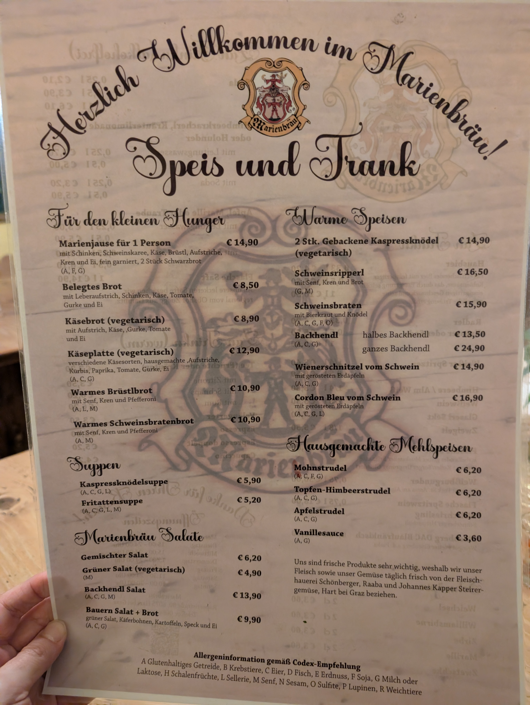
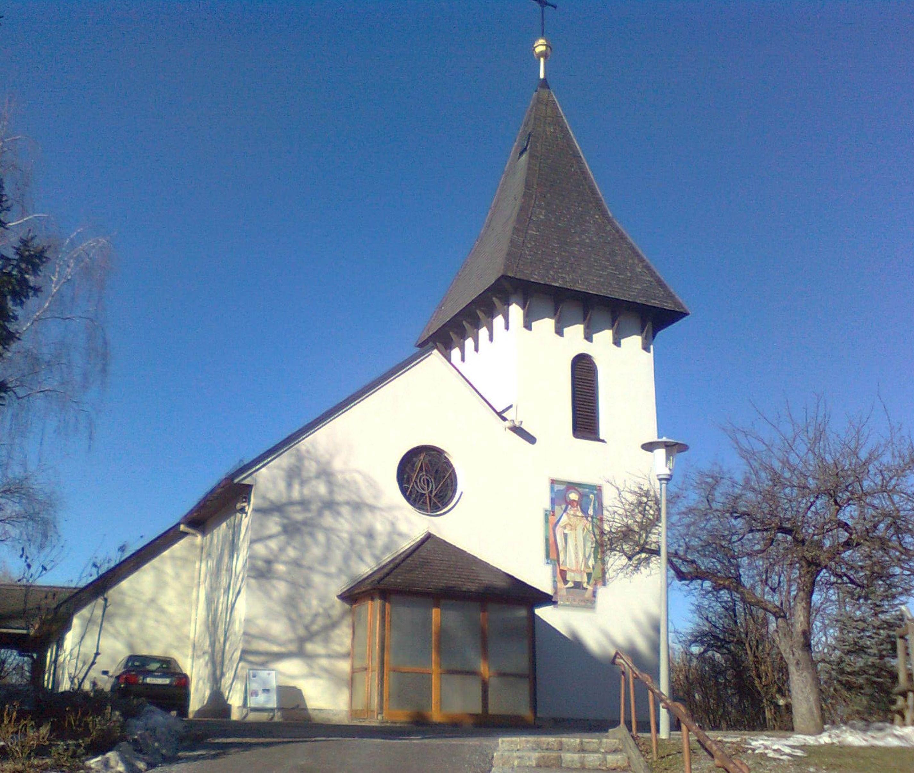
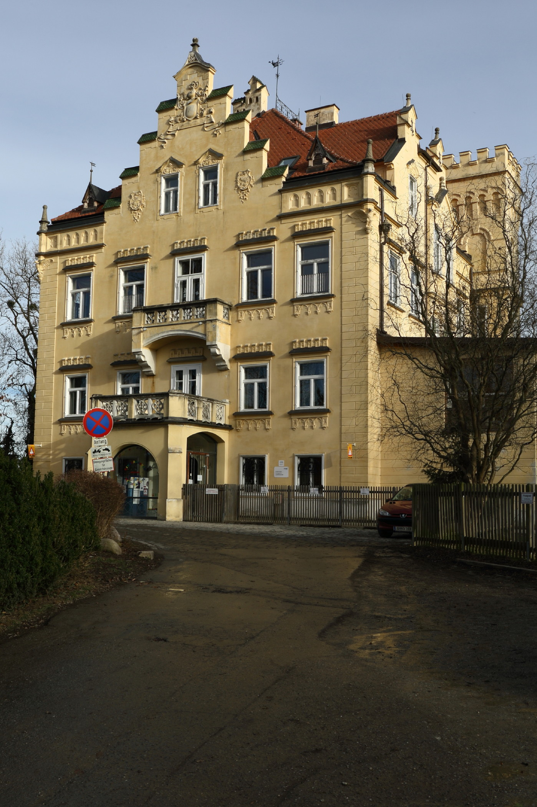
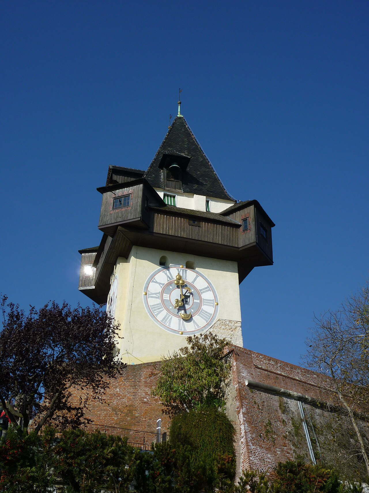

Marienbräu Zwickl
naturtrüb · unfiltriert
Hefig, frisch und süffig, mit feiner Brotnote und sanfter Hopfenblume. Unser Liebling für den Gastgarten.
- Körper●●●○○
- Hopfen●●○○○
Hart bei Graz · Steiermark
Frisches Hausbier aus dem Kupferkessel, knuspriges Backhendl und ein lauschiger Gastgarten.

4.8 / 5.0
aus 450+ Google-Bewertungen
Über uns & die Mariensäule
„Grüß Gott und herzlich willkommen im Marienbräu! Bei uns soll sich jeder Gast wie daheim fühlen — bei einem frisch gezapften Hausbier, ehrlicher steirischer Küche und einem guten Gespräch an unseren Holztischen.“
Seit rund 1850 steht unser Haus an der Rupertistraße — einst ein stattliches Anwesen und ein Zufluchtsort für Frauen, deren Männer als Reisende und Entdecker in die weite Welt hinauszogen. Hier fanden sie Schutz, Gemeinschaft und ein offenes Herdfeuer, bis die Männer heimkehrten. Diese Gastfreundschaft lebt in jedem Winkel des Hauses weiter.
Tief unter der Gaststube verbirgt sich unser Schatz: ein über 20 Meter tiefer, gemauerter Brunnen (Tiefbrunnen), der reines, kühles Quellwasser aus dem Untergrund fördert. Wir haben ihn wiederbelebt — sein Wasser ist die Seele unseres Hausbiers und unserer Küche.
Vor dem Eingang wacht seit den 1670er-Jahren die barocke Mariensäule, errichtet als Zeichen des Dankes und der Hoffnung — sie hat dem Haus seinen Namen gegeben. Drinnen glänzen in der urigen, holzgetäfelten Gaststube die traditionellen Kupfer-Sudkessel, in denen unser Bier naturbelassen und ohne Eile entsteht. Und wenn die Sonne scheint, lädt der schattige Gastgarten unter alten Bäumen zum Verweilen ein.
Herzlich Willkommen im Marienbräu! Speis und Trank
Ehrliche steirische Wirtshausküche mit Zutaten von Bauern aus der Region — dazu unser Bier, frisch aus dem Kupferkessel.
Allergeninformation gemäß Codex-Empfehlung
A Glutenhaltiges Getreide · B Krebstiere · C Eier · D Fisch · E Erdnuss · F Soja · G Milch oder Laktose · H Schalenfrüchte · L Sellerie · M Senf · N Sesam · O Sulfite · P Lupinen · R Weichtiere
Haben Sie ein Lieblingsgericht im Marienbräu?
Helfen Sie anderen Gästen und bewerten Sie unsere steirische Küche auf Google.
Das Brauhaus
Unsere Hausbiere werden direkt in der Gaststube gebraut: mit reinem Quellwasser aus unserem 20 Meter tiefen Brunnen, ausgesuchtem Malz und Aromahopfen. Unfiltriert, naturbelassen und vom Sudkessel bis zum Zapfhahn nur wenige Meter unterwegs.
naturtrüb · unfiltriert
Hefig, frisch und süffig, mit feiner Brotnote und sanfter Hopfenblume. Unser Liebling für den Gastgarten.
bernsteinfarben · vollmundig
Das klassische österreichische Wirtshausbier: malzig-rund mit einem Hauch Karamell und angenehm mildem Abgang.
stark · nur zur Saison
Kräftig, dunkel und wärmend, mit Noten von Röstmalz und Trockenfrüchten — zum Bockbieranstich ein Fixtermin.
Maischen
Malz & Wasser im Kupferkessel
Läutern
Die klare Würze wird gewonnen
Hopfenkochen
Aroma & feine Bittere
Gären & Reifen
Wochen der Geduld im Keller
Einblicke
Glänzendes Kupfer, knisternde Gemütlichkeit und lange Sommerabende unter alten Bäumen.
Gastfreundschaft für Gesellschaften
In Österreich wird Geselligkeit großgeschrieben: Ob Reisegruppe, Busausflug, Familienfeier, Geburtstag oder Vereinsrunde – das Marienbräu bietet reichlich Platz, zügigen herzlichen Service und echte steirische Wirtshauskultur.
Großzügige holzgetäfelte Stuben und ein herrlicher Kastaniengarten für geschlossene Gesellschaften oder große Runden. Eingespieltes Küchen- und Serviceteam für zügige Bewirtung.
Vor den Toren der Stadt (Hart bei Graz): Hervorragende öffentliche Busverbindungen und schnelle Erreichbarkeit in nur 12–15 Minuten direkt aus dem Grazer Stadtzentrum.
Bequeme Parkmöglichkeiten für Reisebusse und Pkws direkt am Gasthaus. Reibungsloses und barrierefreies Ein- und Aussteigen für Gruppen aller Altersklassen.
Zünftige Braten- und Schnitzelplatten (echtes steirisches Landschwein), naturtrübes Marienbräu-Bier direkt aus dem Kupferkessel und hausgemachte Mehlspeisen nach Wunsch.
Wir stimmen Menü, Zeitplan und Platzierung ganz individuell auf Ihre Reisegruppe oder Gesellschaft ab. Unkompliziert und herzlich.
Wann wir für Sie da sind
| Dienstag | 15:00 – 24:00 |
|---|---|
| Mittwoch | 15:00 – 24:00 |
| Donnerstag | 15:00 – 24:00 |
| Freitag | 15:00 – 24:00 |
| Samstag | 11:30 – 24:00 |
| Sonntag | 11:30 – 20:00 |
| Montag | Ruhetag |
| Feiertage | Geöffnet |
Küche bis ca. eine Stunde vor Sperrstunde. An Feiertagen haben wir gerne für Sie geöffnet!
Live-Status
Wir freuen uns auf Ihren Besuch!
Berechnet nach österreichischer Ortszeit (Europe/Vienna).
Anfahrt & Kontakt
Nur wenige Minuten vom Grazer Stadtrand entfernt — mit Parkplätzen direkt beim Haus.
Ausflugsziele & Umgebung
Verbinden Sie Ihren Besuch im Marienbräu mit den schönsten Sehenswürdigkeiten der Region.
ca. 15 Autominuten
Die bedeutendste Wallfahrtsbasilika der Steiermark: Erhaben auf dem Purberg thronend, berühmt für die markante Angelus-Stiege mit 216 Stufen und den Blick über Graz.

Kirche & KunstNur 400 m (3 Gehminuten)
Direkt an der Rupertistraße 121: Die berühmte Kirche begeistert Kunstfreunde mit den farbenprächtigen Glasfenstern des steirischen Meisters Rudolf Szyszkowitz.

Schloss & Tiereca. 2,5 km (5 Autominuten)
Beliebtes Ausflugsziel mit Barockschloss, herrlicher Aussicht auf Graz, Streichelzoo mit Ziegen und Schafen für Kinder sowie Spazierwegen durch Obstgärten und Weinberge.

Welterbe & Gastgarten12–15 Min. von Graz-Zentrum
Vom Grazer Uhrturm direkt ins Grüne: Schnelle Anbindung über St. Peter, schattiger Gastgarten unter Kastanienbäumen, Parkplätze vor Ort und steirische Küche für die Familie.
Vielen Dank!